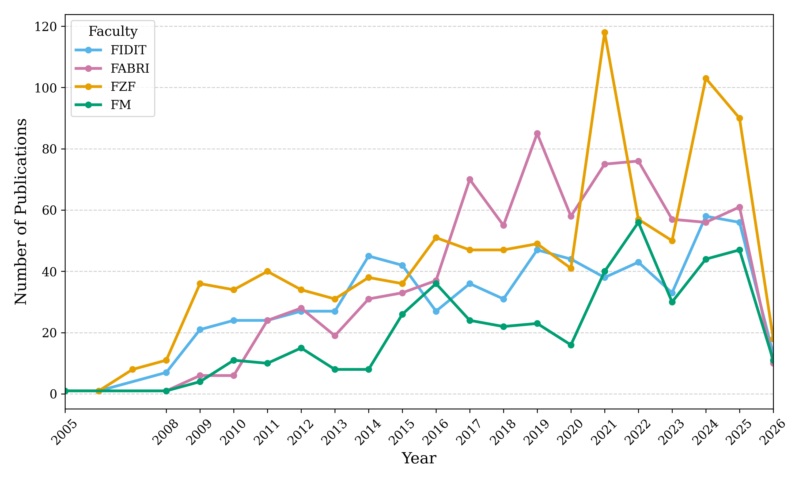
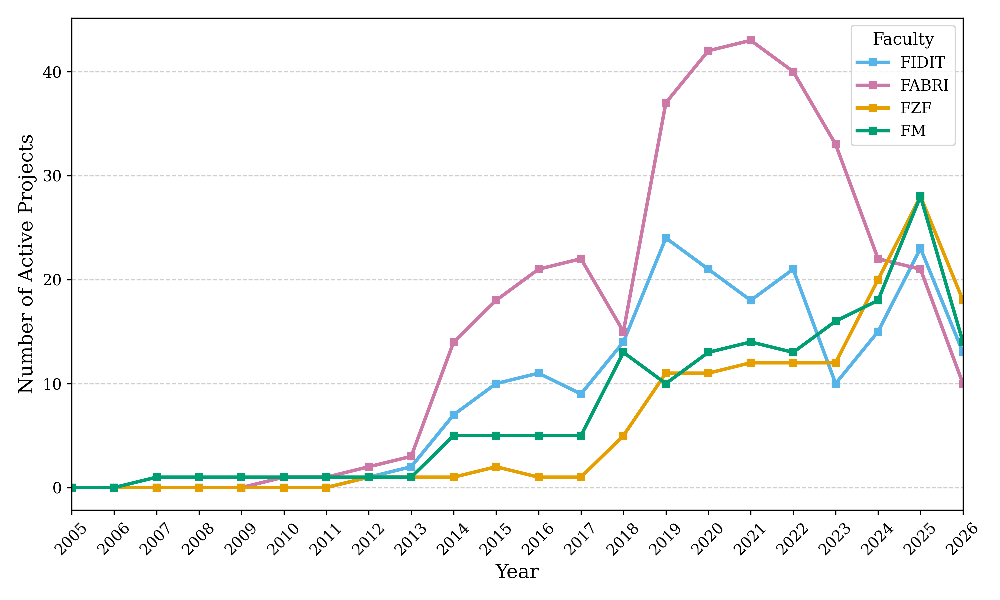
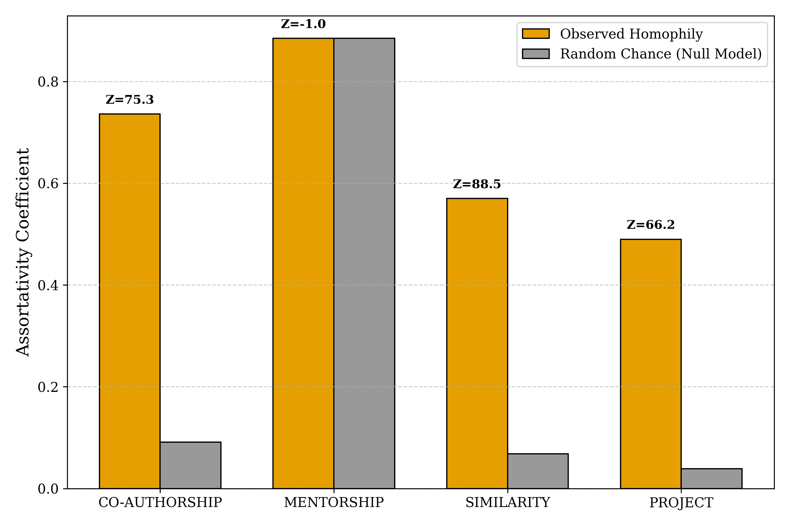
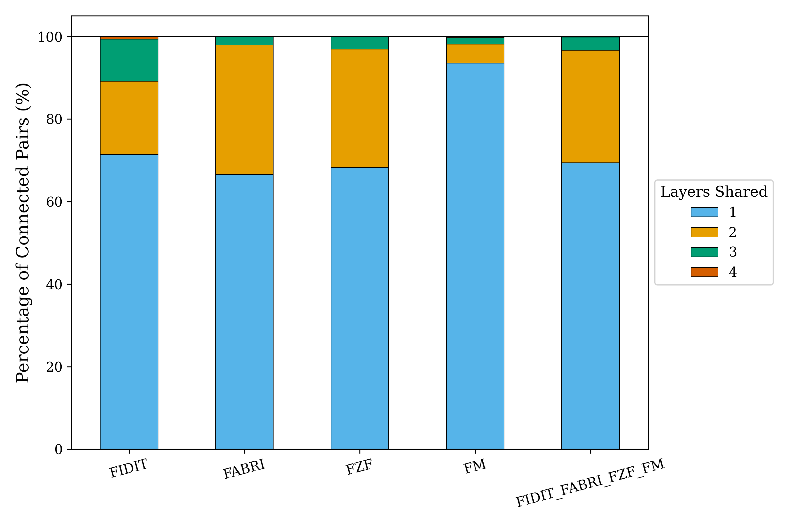
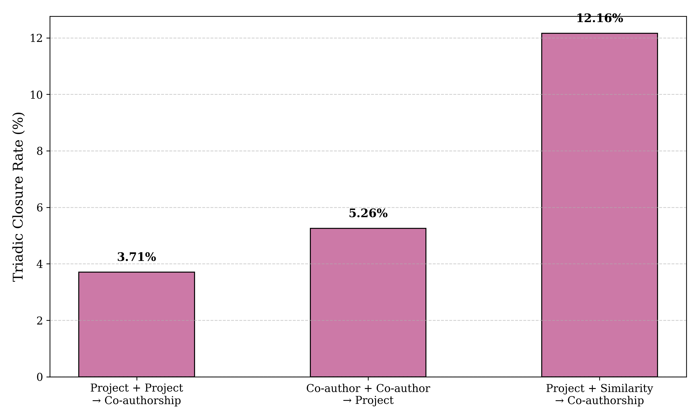
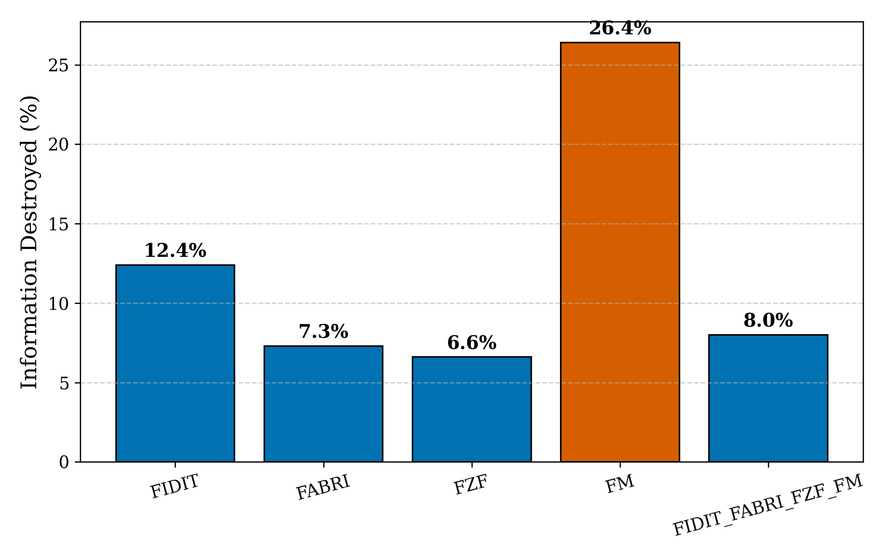
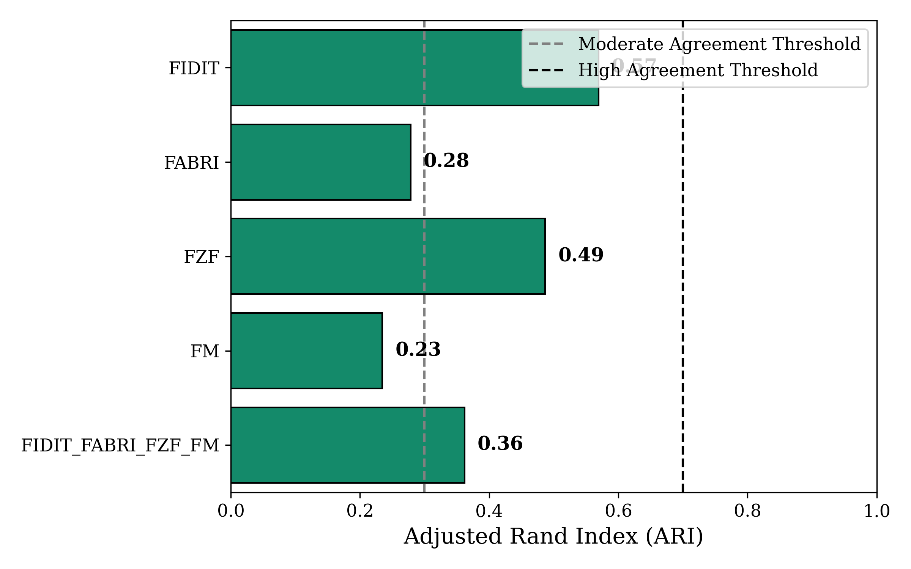
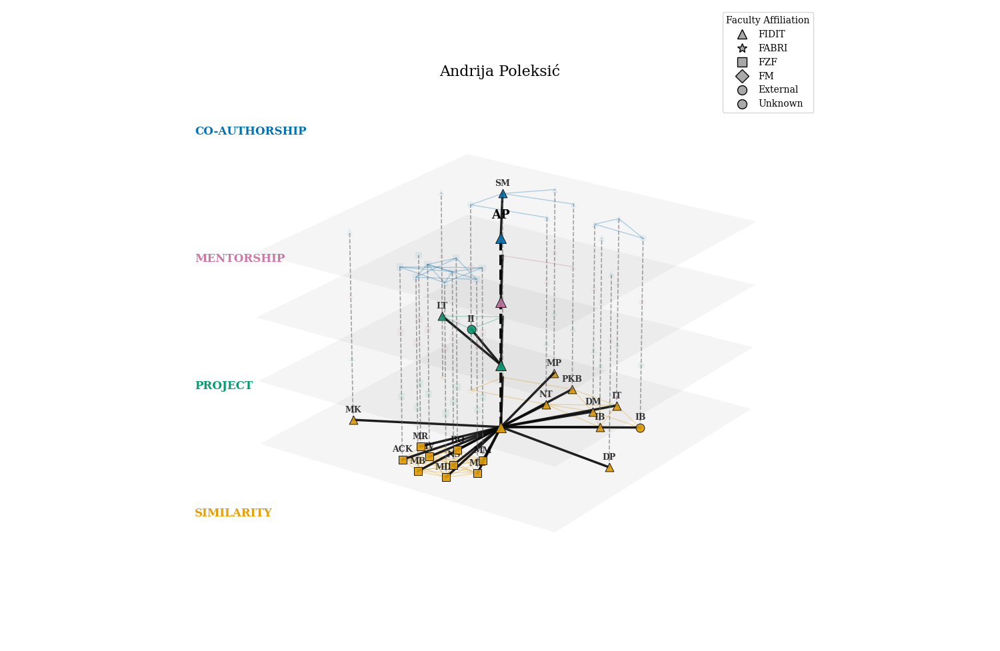

OZM Seminar
Abstract
Understanding the structural dynamics of academic institutions is important for fostering interdisciplinary innovation. Traditional Organizational Network Analysis (ONA) typically reduces multifaceted academic interactions into a single-layer (monoplex) graph, an aggregation that discards structural information and can obscure institutional hierarchies. This paper introduces a Multiplex Organizational Network Analysis (mONA) framework for modelling and evaluating inter-institutional dynamics, and applies it to a case study of four faculties at the University of Rijeka (FIDIT, FABRI, FZF, and FM). Using an automated extraction pipeline built on the Croatian public registries CROSBI and CroRIS, we construct a four-layer multiplex network spanning organic scientific output (co-authorship), hierarchical educational pipelines (mentorship), intellectual proximity (Jaccard-projected keyword similarity), and formal administrative funding (project co-participation).
Applying multilayer network metrics - including the Participation Coefficient, Multilayer -core decomposition, and Multiplex PageRank - we examine cross-layer reinforcement and node versatility, test institutional homophily against degree-preserving randomized null models, and use the Adjusted Rand Index (ARI) to assess community persistence across layers. The results reveal a pronounced "formal-organic gap": funded projects act as one of the few structural bridges between faculties, yet exhibit low edge overlap with organic publication communities, which remain largely autonomous. Shifting from monoplex to multiplex centrality also reveals systematic differences in how much structural information is lost during aggregation across faculties, and surfaces "hidden brokers" whose administrative and cognitive centrality is not reflected in raw publication volume. Together, these findings quantify the practical cost of network aggregation in an academic setting and offer actionable guidance for university leadership, including a prototype recommender system for identifying latent, cross-departmental research synergies.
Implementation of this framework is available on GitHub: https://github.com/P0L3/reference_graphs.
Keywords: Multilayer Networks, Organizational Network Analysis, Multiplexity, Academic Collaboration, Community Detection, Network Sociology
1 Introduction
The production of scientific knowledge is not only an intellectual process, but also a social and organizational one. Researchers do not operate in isolation; rather, they are embedded in a web of collaborations, supervisory relationships, institutional affiliations, and thematic proximities that shape both the direction and the visibility of academic work. For this reason, Social Network Analysis (SNA) and, more specifically, Organizational Network Analysis (ONA), have become useful frameworks for studying how academic institutions function beyond their formal administrative charts. Instead of viewing a university only as a hierarchy of departments and faculties, ONA makes it possible to examine the actual relational structures through which knowledge is produced, transmitted, and coordinated.
Existing studies of academic collaboration have shown that formal organizational units only partially coincide with emergent scientific communities. Co-authorship networks often reveal structures that cut across schools, colleges, laboratories, and disciplinary boundaries, while project participation and other administrative forms of coordination may follow different logics altogether [24, 25, 8]. At the same time, recent multiplex studies of researcher systems show that collaboration cannot be reduced to publications alone, because citation ties, topical similarity, and other relational dimensions frequently capture additional and structurally meaningful forms of academic proximity [33, 3]. In this sense, the academic community constitutes a particularly suitable setting for multilayer network analysis.
Despite this relational richness, many studies of academic collaboration still rely on single-layer, or monoplex, graph representations. In such models, multiple forms of interaction are either ignored or aggregated into a single edge set. Although this simplification is computationally convenient, it comes at a substantial analytical cost. Once co-authorship, mentorship, project participation, and intellectual similarity are collapsed into one graph, the distinct social meanings of these ties become blurred, and important structural differences may disappear altogether [17, 1].
This problem is not merely technical. In organizational settings, the aggregation of heterogeneous ties may distort the identification of key actors, mask the distinction between formal and organic collaboration, and create a misleading impression of institutional cohesion. A researcher who appears peripheral in a publication network may occupy a central bridging role in project administration or mentorship, while a formally well-connected project structure may coexist with highly fragmented publication communities. In this sense, the reduction of a multidimensional academic system to a single graph risks obscuring precisely those features that are most relevant for understanding interdisciplinarity, brokerage, and institutional integration.
The need to preserve relational heterogeneity is consistent with the broader insight that complex systems exhibit properties that are not reducible to the sum of their isolated parts. In the language of multilayer network science, this means that the interaction between layers may generate structural patterns that remain invisible in any one layer alone or in their flattened aggregate [1, 17]. A multiplex perspective is therefore not simply a more detailed description of the same system, but a qualitatively different analytical representation.
Against this background, the present study proposes a Multiplex Organizational Network Analysis framework for examining the internal structure of an academic institution. Rather than representing the university through a single collaboration graph, the study models it as a four-layer multiplex network in which researchers are connected through co-authorship, mentorship, keyword-based cognitive similarity, and project co-participation. Empirically, the analysis focuses on four faculties of the University of Rijeka - the Faculty of Informatics and Digital Technologies (FIDIT), the Faculty of Biotechnology and Drug Development (FABRI), the Faculty of Physics (FZF), and the Faculty of Mathematics (FM) - using data extracted from the Croatian public registries CROSBI and CroRIS.
The contribution of the paper is threefold. First, it develops an automated pipeline for constructing a multiplex academic network from heterogeneous public registry data. Second, it applies multilayer network analysis to an intra-university setting in order to compare formal administrative collaboration with organic scientific collaboration. Third, it evaluates how aggregation alters the perception of institutional structure, especially with respect to homophily, brokerage, community persistence, and core-periphery organization. In this way, the paper joins existing work on university collaboration, publication–project comparison, and multiplex researcher modeling, while combining these perspectives within a single case of academic organizational analysis [24, 8, 33].
To systematically investigate these issues, the study is guided by four primary Research Questions (RQs). Rather than relying only on descriptive network statistics, each RQ is paired with a corresponding hypothesis and evaluated through metrics tailored to multiplex structure [17, 1]:
-
•
RQ1 (Structural Topology & Homophily): How do the formal, hierarchical, and intellectual layers of an academic institution differ in their network topology, and to what extent is institutional homophily statistically significant? Hypothesis: Faculties operate as highly siloed administrative and cognitive clusters. We test this by comparing the observed institutional assortativity against degree-preserving randomized null models.
-
•
RQ2 (Cross-Layer Reinforcement): To what extent do formal administrative collaborations (Projects) dictate organic scientific output (Co-authorship)? Hypothesis: Formal funding and organic output are distinct sociological processes. We measure this through edge multiplicity distributions and multiplex triadic closure, identifying whether social capital successfully flows across different contextual layers.
-
•
RQ3 (The Cost of Aggregation & Interdisciplinary Brokerage): How does the identification of key institutional actors change when shifting from a monoplex (single-layer) to a multiplex paradigm? Hypothesis: Aggregating a university into a single-layer network destroys critical structural information, hiding true interdisciplinary brokers. We quantify this information loss using Spearman rank correlation between monoplex and multiplex PageRank, and identify boundary-spanners using the Participation Coefficient ().
-
•
RQ4 (Core-Periphery & Community Persistence): Are institutional sub-communities resilient, and do funding structures strictly define publication boundaries? Hypothesis: Beneath the fragmented departments lies a resilient, multi-contextual elite core. We utilize Multilayer -core decomposition to isolate this elite core, and the Adjusted Rand Index (ARI) to measure community persistence between the project and co-authorship layers.
2 Theoretical Background
2.1 Mathematical Formalism of Multilayer Networks
Classical graph theory represents a network as a graph , where denotes the set of nodes and the set of edges connecting them. Such a representation is adequate when only a single type of relation is of interest. However, many empirical systems contain several qualitatively different types of interactions that cannot be reduced to one edge set without losing information. Academic communities are a clear example: the same researchers may be connected through co-authorship, mentorship, project participation, or thematic similarity, and each of these ties reflects a different organizational logic. For such systems, the multilayer formalism provides a more expressive mathematical framework [17, 1].
In the general formulation of multilayer networks, a system is represented as
where is the set of physical nodes, denotes the collection of layers or layer aspects, is the set of node-layer tuples, and is the set of edges defined between these tuples [17]. This formalism distinguishes between the physical entity and its manifestation in a particular relational context. In other words, the same researcher may appear simultaneously in a publication layer, a mentorship layer, and a project layer, while remaining one underlying actor in the system.
A key conceptual contribution of the multilayer framework is the introduction of aspects. An aspect represents one dimension along which layers are differentiated, such as interaction type, time, space, or institutional context [17]. In the present study, the relevant aspect is the type of academic relation. Elementary layers correspond to the individual categories of ties, while layer combinations refer to the structured set of these elementary layers taken together as one multiplex object. This distinction is important because it clarifies that a multilayer network is not simply a collection of separate graphs, but a formally unified system in which relations can be analyzed both within and across layers.
From a computational perspective, multilayer systems may be represented either in tensor form or in matrix form. Tensor formulations are mathematically elegant because they preserve the full multidimensional structure of the system and are well suited to theoretical derivations [17]. In practice, however, many analyses rely on the supra-adjacency matrix, which flattens the layered structure into a larger block matrix whose diagonal blocks encode intra-layer edges and whose off-diagonal blocks encode inter-layer couplings [17, 1]. This matrix-based representation is especially useful for algorithmic implementations of centrality, clustering, and diffusion measures, since it allows multilayer problems to be treated using extended linear-algebraic tools developed for ordinary graphs.
2.2 Multiplex Networks and Inter-Layer Couplings
A particularly important subclass of multilayer systems is the multiplex network. In a multiplex network, the same set of nodes is present across all layers, but the meaning of the edges differs from one layer to another [17, 1]. This makes multiplex networks especially suitable for social and organizational settings, where actors typically remain fixed while the types of relations between them vary. In the present case, the nodes are researchers, while the layers correspond to co-authorship, mentorship, keyword-based similarity, and project co-participation.
The defining intuition behind multiplexity is that different ties are not interchangeable. A co-authorship link does not carry the same sociological meaning as a mentorship relation, and neither should be conflated with administrative co-membership on a funded project. Aggregating all these ties into a single graph may increase apparent density, but it does so at the cost of interpretability and structural precision. Multiplex modeling preserves this relational heterogeneity and therefore permits a more faithful description of institutional structure [17, 1].
Inter-layer coupling determines how node copies are connected across layers. In static multiplex systems, the most common form is categorical coupling, in which each node is connected to its counterparts across all layers [17]. These couplings do not usually represent empirical social ties in their own right; rather, they encode the fact that the same actor participates in several relational contexts simultaneously. This is the standard assumption for most multiplex analyses and underlies the supra-adjacency approach used by many multilayer centrality measures.
By contrast, ordinal coupling is characteristic of temporal multilayer networks, where a node in one time slice is connected only to itself in adjacent time slices [17]. Ordinal coupling imposes a sequential structure and is useful when the primary question concerns network evolution over time. Although the present study is static rather than temporal, the distinction remains theoretically important because it clarifies that not all multilayer systems are organized in the same way. The categorical coupling used here reflects coexistence of relation types, whereas ordinal coupling reflects temporal succession.
2.3 Hypergraphs and Clique Projections
A further theoretical issue arises from the fact that many academic relations are not naturally dyadic. Standard graphs assume that edges connect exactly two nodes, yet many scholarly activities are inherently group-based. A scientific paper with five co-authors, for example, is more naturally represented as a hyperedge connecting all five actors simultaneously. Hypergraphs generalize ordinary graphs by allowing one edge to join an arbitrary number of nodes [17].
This distinction matters because the pairwise graph used in network analysis is often a projection of a richer underlying relational structure. When a multi-author paper is projected into an ordinary co-authorship graph, the hyperedge is transformed into a clique: each pair of co-authors becomes connected by an edge. This projection is convenient and standard, but it also introduces interpretive caution. A dense clique in the projected graph may reflect one collective event rather than many independent pairwise collaborations.
In multiplex settings, clique projection becomes even more consequential because different layers may originate from different underlying data-generating processes. Co-authorship is projected from group publications, project participation is projected from administrative teams, and semantic similarity is projected from shared keyword profiles rather than direct interaction. The multiplex framework does not eliminate these projection effects, but it makes them easier to reason about by keeping the resulting tie types analytically distinct. For a study of academic organizations, this is preferable to collapsing all projected relations into one monoplex graph, where the difference between collective production, hierarchical supervision, and formal administration would become much harder to interpret [17].
3 Related Work
The literature most closely related to this study lies at the intersection of university collaboration research, publication-project comparison studies, and multiplex models of researcher relations. Existing work shows that formal academic units only partially coincide with observed collaboration communities, that project-based and publication-based collaboration reflect different structural regimes, and that multi-relational models can capture institutional structure more adequately than single-layer co-authorship graphs.
Obermeier et al. [24] analyze publication data from University College Dublin and compare formal organizational units with co-authorship communities inferred from an author-publication network. They report that colleges explain relatively little of the observed collaboration structure, while schools provide only a partial fit. The same study also examines brokerage positions across organizational units. Obermeier and Brauckmann [25] further investigate collaboration patterns at University College Dublin by distinguishing collaboration within schools from collaboration across schools and colleges. Their results show that increases in collaboration are driven largely by intra-school collaboration rather than by strong growth in broader interdisciplinarity. Levy and Muller [18] examine whether academic laboratories correspond to scientific communities and find only partial overlap between formal laboratory boundaries and collaboration structure. Rodriguez and Pepe [28] similarly show that structurally detected communities and socioacademic groupings do not coincide perfectly in co-authorship networks.
Clemente-Gallardo et al. [8] compare publication and project collaboration networks within the University of Zaragoza. They find that although individual productivity displays similar broad scaling behavior in both domains, the two networks differ in higher-order topology: project collaboration is more hierarchical and modular, whereas publication collaboration is more symmetric and outward-looking. Miguel et al. [20] analyze the dynamics of funded projects and co-authored publications in library and information science in Argentina. Their study also treats projects and publications as distinct collaborative structures and reports differences in the way research groups evolve across the two domains. Smith et al. [30] study collaboration patterns on funded research projects in the UK research system and show that project-based collaboration networks display their own hierarchical and concentration patterns. Taken together, these studies treat funded collaboration and publication collaboration as related but non-equivalent structures.
Tuninetti et al. [33] construct a researcher-level multiplex network from co-authorship, citation, and keyword-overlap layers in order to predict future scientific collaborations. They show that citation and keyword layers provide additional predictive information beyond co-authorship alone. More generally, Battiston et al. [3] show that collaboration communities can emerge differently across layers in multiplex collaboration networks. Their results support the use of layered rather than aggregated representations when different relation types coexist.
The present study combines these lines of work in a single university-focused framework. Like the university collaboration studies, it compares formal academic boundaries with emergent collaboration structure [24, 25]. Like the publication-project comparison literature, it analyzes whether administrative coordination and scientific output follow the same structural logic [8, 20]. Like the multiplex modeling literature, it represents researchers through several relation types rather than through a single co-authorship graph [33]. In this sense, the study brings together organizational comparison, collaboration-layer comparison, and multiplex representation within one case of intra-university academic structure.
4 Analytical Framework and Network Metrics
To address the research questions, standard graph metrics must be extended from the monoplex setting to the multiplex one. The analytical logic of this study operates on three complementary levels: intra-layer topology, inter-layer reinforcement, and aggregate multiplex dynamics [17, 1]. The first level characterizes each layer as a social structure in its own right. The second examines whether ties in one context are reproduced or reinforced in others. The third asks how node roles and institutional structure change once all layers are analyzed jointly rather than in isolation.
4.1 Intra-Layer Topology, Homophily, and Statistical Validation
The analysis begins by establishing a baseline topological profile for each layer. Standard descriptive quantities such as density, average path length, and the size of the Giant Connected Component (GCC) provide an initial view of whether a layer is sparse or cohesive, fragmented or integrated. These measures are not uniquely multiplex, but they remain essential because they describe the local structural environment within which more advanced cross-layer patterns emerge.
To quantify institutional siloing, the study measures institutional assortativity, that is, the tendency of researchers to connect preferentially with others from the same faculty. In network terms, this is a form of assortative mixing by categorical attribute, where the relevant attribute is faculty affiliation [22]. A high assortativity value indicates that ties are concentrated within organizational boundaries, whereas lower values suggest more cross-faculty mixing. In the context of academic institutions, this measure provides a compact way to operationalize homophily and to test whether disciplinary or administrative divisions are reflected in the observed network structure.
Observed assortativity and clustering, however, should not be interpreted in isolation. Some apparent structure may arise mechanically from the degree sequence of the network rather than from a meaningful social process. For this reason, the study employs degree-preserving randomized null models, generated through repeated edge swapping while keeping the exact degree of every node fixed [21, 7]. Crucially, for directed relational structures (such as Mentorship), the swapping algorithm is constrained to preserve both the in-degree and out-degree sequences independently. By comparing the empirical network to an ensemble of randomized counterparts, it becomes possible to test whether the observed level of institutional homophily or local closure exceeds what would be expected from degree constraints alone. The resulting Z-scores therefore do not prove a sociological mechanism in a strict causal sense, but they do indicate whether the observed pattern is unlikely to be a trivial consequence of network density or degree heterogeneity [21, 7].
4.2 Multiplex Edge Overlap and Triadic Closure
Once each layer has been characterized individually, the next step is to examine the extent to which relations are reinforced across contexts. A central concept here is edge overlap, which measures whether the same pair of actors is connected in more than one layer [4]. In substantive terms, overlap captures whether a formal administrative tie is also an organic publication tie, whether mentorship tends to evolve into co-authorship, or whether topical similarity coincides with actual collaboration.
A simple descriptive way to summarize this phenomenon is through the edge multiplicity distribution, which records the proportion of ties that appear in exactly one, two, or more layers [4]. A system in which most ties are layer-specific exhibits strong functional separation between relational contexts, whereas a system with high multiplicity displays greater cross-context reinforcement. To compare individual layers directly, the study also uses Jaccard edge overlap, defined as the size of the intersection of two edge sets divided by the size of their union. This provides an interpretable measure of how strongly two relational dimensions align.
Beyond pairwise overlap, multiplex systems also allow new forms of closure. In ordinary graphs, transitivity measures whether two neighbors of a node are themselves connected. In multiplex networks, closure may occur across different relational contexts: for example, two researchers may be indirectly linked through a project and a mentorship relation, while closure occurs through later co-authorship or topical similarity. This idea is captured by multiplex triadic closure, which generalizes clustering and transitivity to layered settings [4, 9].
The importance of this extension is conceptual as well as technical. A triangle confined to one layer indicates closure within a single social logic, whereas a triangle spanning multiple layers indicates that different institutional processes reinforce one another. In this sense, mixed-layer triads can be interpreted as evidence of multi-contextual synergy. They are especially relevant in academic settings, where formal structures, cognitive proximity, and organic collaboration may or may not align. The framework developed for such layered triads shows that closure in multiplex systems is qualitatively richer than in monoplex ones and that aggregation can conceal these distinctions [9].
4.3 Interdisciplinary Brokerage and the Cost of Aggregation
A central claim of multiplex network analysis is that aggregation into a single flattened graph can alter the identification of important actors [17, 31, 10]. In an academic setting, this matters because prominence in one layer need not imply prominence in another. A researcher may publish less than some peers but still occupy a crucial bridging role by connecting project teams, mentoring junior scholars across units, or linking otherwise distant topical communities. The cost of aggregation is therefore not merely descriptive; it affects substantive conclusions about brokerage, influence, and institutional visibility.
To quantify this effect, the study compares node rankings obtained from a standard aggregated graph with those obtained from a multilayer random-walk centrality defined on the supra-adjacency representation of the network. Specifically, it computes PageRank [26] on the flattened monoplex projection and, separately, PageRank on the multiplex supra-graph, in which each researcher is represented by a node replica in every layer and corresponding replicas are connected through inter-layer couplings [10, 31, 32]. In this representation, centrality is not derived from a layer-biasing scheme [15], but from a random walk over the full interconnected multilayer structure. After computing PageRank on the supra-graph, the layer-specific scores are marginalized back to physical nodes to obtain an overall measure of multilayer prominence or versatility.
The divergence between the monoplex and multilayer rankings is then summarized using Spearman rank correlation . A high correlation would suggest that aggregation preserves the main hierarchy of actors, while a low correlation would indicate substantial information loss and the presence of structurally important roles that become visible only when the layered architecture is retained [31, 32].
To identify such roles more directly, the analysis uses the participation coefficient, which measures how evenly a node’s ties are distributed across layers [4]. Let denote the degree of node in layer , and let denote the overlapping degree, that is, the sum of its degrees across all layers. The participation coefficient is then defined as
| (1) |
A high value indicates that the node distributes its ties relatively broadly across multiple contexts, whereas a low value indicates concentration in a single relational domain. In this study, nodes with high participation are interpreted as potential interdisciplinary brokers, because their embeddedness is not confined to only one institutional channel.
This perspective is complemented by Burt’s constraint, which captures the extent to which a node’s contacts are redundant rather than structurally diverse [6, 11]. Low constraint indicates access to structural holes and thus greater brokerage potential, while high constraint suggests that a node is embedded in a closed and redundant neighborhood. Used together, participation coefficient and constraint distinguish between actors who are simply active and actors who genuinely span disconnected parts of the university.
4.4 Core-Periphery Structure and Community Persistence
To move from local brokerage to mesoscopic structure, the study examines whether the university contains a stable and densely connected institutional core. In sparse multilayer systems, Mutually Connected Components can be too restrictive, since requiring simultaneous connectedness across all layers often yields unstable or trivial results. Rather than applying a fully multilayer vector-valued core decomposition, the present analysis adopts a more operational approach: it constructs a binary aggregated graph representing the topological union of ties across the multiplex system and then applies the standard monoplex -core decomposition to this projection.
In the single-layer setting, a -core is the maximal subgraph in which every node has degree at least . Applied to the aggregated binary projection, this measure identifies the structurally cohesive backbone of the university: the set of actors who remain embedded after recursively removing nodes with low degree from the overall union of academic relations. In this sense, the resulting core should not be interpreted as a fully multilayer core in the strict formal sense developed in the multilayer literature [13], but rather as a robust topological approximation of the institution’s embedded center based on the combined relational scaffolding of the network. For interpretive clarity, the results may still be described in terms of an elite core, semi-core, and periphery, provided that this classification is understood as arising from the aggregated structural backbone rather than from a layer-wise vector coreness criterion.
Finally, the study asks whether formal administrative structures and organic scientific collaboration produce similar mesoscopic partitions. To do so, Louvain community detection is applied independently to the Project and Co-authorship layers [5]. The similarity between the resulting partitions is then measured using the Adjusted Rand Index (ARI), which quantifies agreement between two clusterings while correcting for chance [34]. An ARI close to 1 indicates strong alignment between the two community structures, whereas an ARI near 0 suggests that project-based administrative groupings and publication-based collaboration communities are largely distinct. This provides a direct way to test whether formal funding structures actually organize scientific output, or whether organic research communities remain relatively autonomous from administrative boundaries.
5 Case Study: Academic Multiplex Network of the University of Rijeka (FIDIT, FABRI, FZF, FM)
5.1 Data Source and Extraction Architecture
The empirical foundation of this study relies on data extracted from two centralized, publicly available Croatian academic registries: CROSBI (Croatian Scientific Bibliography)111https://www.croris.hr/crosbi/ and CroRIS (Croatian Research Information System)222https://www.croris.hr/ [19]. To capture a multi-disciplinary ecosystem, the extraction pipeline was configured to target four distinct faculties at the University of Rijeka: the Faculty of Informatics and Digital Technologies (FIDIT)333https://www.inf.uniri.hr/en/, the Faculty of Biotechnology and Drug Development (FABRI)444https://biotech.uniri.hr/, the Faculty of Physics (FZF555Unofficial acronym used in the code implementation. Official acronym is FIZRI.)666https://phy.uniri.hr/en/, and the Faculty of Mathematics (FM777Unofficial acronym used in the code implementation.)888https://math.uniri.hr/en/.
An automated Python pipeline was developed to query the respective REST API endpoints. The CROSBI API provided comprehensive metadata regarding scientific publications, including authorship roles, supervisory relationships, and semantic keywords. Concurrently, the CroRIS Projects API was utilized to extract administrative data on funded research projects, including temporal duration and official project team rosters. By integrating these two distinct data sources, we successfully engineered a four-layer multiplex network encompassing organic scientific output, hierarchical mentorship, cognitive similarity, and formal administrative funding.
Before constructing the relational multiplex networks, an initial scientometric and bibliometric analysis was conducted on the raw extracted data. The dataset captures collaborative scientific publications (defined as publications with at least two authors/mentors registered in the system), funded research projects, and semantic keywords extracted from publication abstracts and metadata.
| Institution | Researchers | Collab. Pubs | Pub Timeline (Median) | Projects | Avg. Proj Duration | Unique Keywords |
|---|---|---|---|---|---|---|
| FIDIT | 285 | 659 | 1990–2026 (2019) | 69 | 2.5 yrs | 3016 |
| FABRI | 1062 | 790 | 1997–2026 (2019) | 84 | 3.3 yrs | 3316 |
| FZF | 599 | 947 | 1983–2026 (2020) | 45 | 3.0 yrs | 2786 |
| FM | 223 | 434 | 2001–2026 (2021) | 54 | 2.5 yrs | 1654 |
| GLOBAL | 1884 | 2778 | 1983–2026 (2019) | 247 | 2.9 yrs | 10271 |
As detailed in Table 1, the dataset exhibits several distinct administrative and bibliometric characteristics. The global network comprises 1,884 unique researchers and 2,778 collaborative publications, spanning over four decades of academic output (1983–2026). Crucially, the mathematical sum of the local institutional publications () exceeds the global count (), and similarly, the sum of local projects () exceeds the global project count (). This discrepancy mathematically proves the existence of inter-institutional boundary-spanning prior to any complex network analysis; a single publication or project co-managed by researchers from different faculties is counted in both local sub-datasets but properly deduplicated in the global registry. To observe the longitudinal evolution of this academic ecosystem, the temporal distributions of both organic scientific output (Figure 1) and formal project funding (Figure 2) were plotted from 2005 to 2026.
As illustrated in Figure 1, the chronological distribution of scientific output displays significant variation in volume across the disciplines. The Faculty of Physics (FZF) historically dominates collaborative publication volume, punctuated by massive spikes in 2021 and 2024. Conversely, the Faculty of Mathematics (FM) exhibits a lower baseline volume, aligning with disciplinary norms of smaller, highly theoretical research teams999Note that the Faculty of Mathematics has the smallest number of researchers among the four institutions (Table 1).. Despite these volume differences, all four faculties display a synchronous upward trajectory accelerating post-2013, reflecting both an actual increase in scientific productivity and the systematic digitization of historical records into the national CROSBI database. (The sharp decline observed in 2026 is an expected artifact of the data collection occurring mid-year).
A parallel analysis of administrative coordination (Figure 2) reveals the cyclic nature of academic funding. By plotting the volume of active projects per year (accounting for project start and end dates), distinct institutional funding waves emerge. The Faculty of Biotechnology and Drug Development (FABRI) exhibits a massive surge in project acquisition peaking around 2020–2021, indicating heavy utilization of mid-term national or European funding cycles (e.g., EU Structural Funds). Interestingly, all faculties exhibit a sharp, synchronized convergence in project activation around 2024–2025. Most importantly, the project density curves do not perfectly mirror the publication curves. For example, while FZF dominates the publication timeline, FABRI dominates the project timeline for nearly a decade. This temporal misalignment provides early descriptive evidence of the "formal-organic gap" - proving that formal funding density does not linearly equate to publication volume.


5.2 Methodological Challenges and Data Cleansing
Constructing a reliable organizational network from unauthenticated, self-reported public APIs introduces several methodological challenges. To ensure the structural integrity of the multiplex graph, a robust, three-stage data normalization and cleansing pipeline was implemented:
First; Entity Resolution (Identity Disambiguation): The CROSBI API utilizes a crorisId for researchers, whereas the CroRIS Projects API relies on a distinct persId. Furthermore, external collaborators frequently lack official identifiers in the system. To prevent node duplication, a centralized Node Registry was implemented, utilizing a sanitized, synthetic key (based on standardized surname and name strings) to definitively merge cross-API records into single multiplex nodes.
Second; Thesis Inflation Filtration: In the CROSBI database, academic theses (bachelor’s, master’s, and doctoral) are registered as publications where the student is the author and the supervisor acts as a co-author. Treating these records as standard scientific co-authorship artificially inflates the density of the collaboration graph. To mitigate this, a filtration heuristic was applied: publications classified as "ocjenski rad" were strictly routed to the directed Mentorship layer, ensuring the Co-authorship layer accurately reflects peer-level scientific production.
Third; Tiered Affiliation Disambiguation: Because publication metadata often lacks explicit author-to-institution mappings, researchers collaborating across institutional boundaries are susceptible to "affiliation contagion" (e.g., a physicist inheriting an informatics affiliation due to a joint paper). To resolve this, a tiered voting hierarchy was developed. Institutional assignments derived from the CroRIS Projects API were treated as absolute truth, as they are legally bound to employment records. For researchers lacking project data, a majority-voting algorithm was applied to their publication history. Finally, researchers whose resolved affiliations fell outside the four target faculties were strictly categorized as "External" to prevent the artificial inflation of inter-departmental boundary-spanning metrics.
5.3 Definition of the Four Mapped Layers
The resulting multiplex network is formally defined across four distinct relational layers:
-
1.
Co-authorship Layer (Organic Output): Undirected edges connecting researchers who co-authored a scientific publication (extracted from CROSBI).
-
2.
Mentorship Layer (Hierarchical Pipeline): Directed edges representing a supervisor-to-student guidance relationship (extracted from CROSBI).
-
3.
Research Similarity Layer (Cognitive Overlap): Undirected edges formed by projecting a bipartite author-keyword graph using the Jaccard similarity coefficient (threshold ).
-
4.
Project Co-participation Layer (Formal Administration): Undirected edges representing shared membership on a funded research grant (extracted from CroRIS).
6 Results and Discussion
6.1 RQ1: Structural Topology and Institutional Homophily
Standard monoplex representations inherently assume a uniform topological geometry across all relational ties. However, this assumption is often limited when evaluating multi-contextual academic environments, as it conflates hierarchical structures (e.g., mentorship) with peer-to-peer collaborations. To address this, we systematically evaluate the baseline topologies of the four isolated multiplex layers before testing for institutional homophily against degree-preserving randomised null models.
The empirical topology exhibits distinct architectural variations across the relational contexts. Within the global institutional network, the formal administrative space (Project layer) displays a high density, with a Giant Connected Component (GCC) encompassing of active nodes. In contrast, the hierarchical pipeline (Mentorship layer) is fundamentally fragmented, yielding a GCC of only . The Co-authorship and Similarity layers operate as the primary connective structures of the system, maintaining robust integration with GCCs of and , respectively.
To determine whether the observed departmental siloing is a genuine sociological boundary or a mechanical artefact of network density, we compare the empirical attribute assortativity against an ensemble of strict, degree-preserving null graphs. As illustrated in Figure 3, the observed institutional homophily deviates significantly from random chance. Within the global Co-authorship layer, we observe an assortativity coefficient of , whereas the null models dictate an expected baseline of (). Similarly, the Project layer demonstrates strong boundary preservation, yielding an observed assortativity of compared to a null baseline of ().

Overall, the results support RQ1, indicating that faculties operate as strictly delineated administrative and cognitive clusters. The computed -scores suggest that disciplinary homophily is an active sociological constraint rather than a structural byproduct of degree heterogeneity.
6.2 RQ2: Multiplex Edge Overlap and Reinforcement
While institutional silos are clearly defined, evaluating whether formal administrative interventions successfully translate into organic scientific output requires an analysis of cross-layer tie reinforcement. Standard evaluation metrics frequently presume a linear transfer of social capital across contexts. To test this assumption, we formulate our analysis around edge multiplicity and Jaccard overlap to isolate the exact translation rate of formal funding into organic publication.
The distribution of edge multiplicity across the network, detailed in Figure 4, highlights a distinct separation between formal and organic interactions. Globally, of all collaborative pairs exist in exactly one layer, indicating highly specialised interactions. This structural configuration is heavily discipline-dependent: the Faculty of Mathematics (FM) exhibits marked functional separation, with of ties restricted to a single layer. Conversely, the Faculty of Biotechnology and Drug Development (FABRI) demonstrates a more integrated relational structure, where of ties span two or more multiplex dimensions. Furthermore, a direct calculation of the global Jaccard edge overlap between the Project and Co-authorship layers yields an intersection of only ().

To isolate the specific pathways of social capital translation, we evaluate multiplex triadic closure rates (Figure 5). If two researchers share a mutual project neighbour, the probability that they will close the triad via direct Co-authorship is . However, if we condition this closure on intellectual proximity - where two researchers share a project neighbour and exhibit high semantic Keyword Similarity - the closure rate increases to .

Overall, the results support RQ2, demonstrating that formal administrative collaborations do not strictly dictate organic scientific output. The low structural overlap and conditioned triadic closure rates suggest that top-down funding alone is frequently insufficient to force collaboration; cognitive alignment (topical similarity) appears to act as a necessary catalyst for multi-contextual synergy.
6.3 RQ3: Multiplex Centrality and Information Loss
Traditional Organizational Network Analysis (ONA) leverages single-layer centrality metrics to categorise institutional importance. However, this monoplex aggregation compresses independent interaction spaces, inherently penalising boundary-spanning actors whose influence is distributed across multiple, sparser layers. To quantify this structural distortion, we calculate the Spearman rank correlation () between a standard monoplex PageRank and a random-walk centrality computed over the fully interconnected multiplex supra-adjacency matrix.
Figure 6 illustrates the precise information loss () induced by graph flattening. Globally, aggregating the network introduces an structural information loss (). Notably, this aggregation cost is distributed asymmetrically across disciplines. While FABRI experiences a minimal divergence, FM registers a loss of structural information (). This divergence indicates a monoplex bias against disciplines characterised by smaller, highly specialised collaborative configurations.

By shifting to the multiplex paradigm, we successfully identify interdisciplinary brokers who appear peripheral in raw publication volume but occupy vital institutional positions. Specifically, by optimising for the Participation Coefficient () and minimising Burt’s constraint, the supra-adjacency formulation elevates these boundary-spanning actors. For instance, specific researchers within FM (e.g., Researcher DC, exhibiting a remarkably low Burt’s constraint of ) and FIDIT (e.g., Researcher AM) are revealed as primary structural-hole spanners. These actors distribute their academic bandwidth evenly across mentoring, project administration, and varied topical themes, thereby bridging disconnected departmental units.
Overall, the results support RQ3, demonstrating that monoplex aggregation obscures critical hierarchical information. Multiplex centrality provides a more robust mechanism for evaluating researchers who function as the multi-contextual administrative and cognitive bridges within the university.
6.4 RQ4: Inter-Institutional Dynamics and Core-Periphery
While local boundary-spanners bridge distinct sub-graphs, we must subsequently assess whether formal funding architectures align with the organic, mesoscopic community structure of the university. To evaluate this alignment, we compute the Adjusted Rand Index (ARI) to map the persistence of Louvain communities between the Project and Co-authorship layers, followed by a multilayer -core decomposition to isolate the institution’s structural backbone.
The ARI analysis, visualised in Figure 7, reveals substantial disciplinary discrepancies in structural autonomy. The Faculty of Informatics and Digital Technologies (FIDIT) exhibits a moderate persistence score of , suggesting that funded project teams exert a measurable influence on subsequent publication clusters. In contrast, both FM () and FABRI () yield low persistence scores. This indicates that their respective academic publishing communities organise largely independently of formal project allocations.

Despite this community-level fragmentation across layers, recursive -core filtering of the aggregated topological projection identifies a cohesive institutional core. The decomposition isolates an elite core comprising 69 multi-contextually embedded researchers (achieving a maximum threshold of ). Notably, this core heavily incorporates actors from the natural sciences (FZF and FM). This structural pattern demonstrates that despite variations in edge volume, these researchers form a dense, topologically resilient centre within the broader university ecosystem.
Overall, the results support RQ4, indicating that formal funding structures do not strictly define publication boundaries. The academic ecosystem exhibits autonomous organic sub-communities that simultaneously intersect to form a stable, multi-disciplinary topological core.
To bridge the gap between matrix algebra and human interpretability, the study also generated an egocentric 3D visualization using Matplotlib (Figures 8–LABEL:fig:ego4). By anchoring researchers to unified 2D coordinates and projecting them across vertically stacked -planes representing the four relational contexts, the visualization physically separates the networks. Categorical coupling edges (vertical dashed lines) allow for the immediate visual identification of boundary-spanning actors, proving effective for communicating complex multiplex topologies without the visual distortion inherent in 2D aggregations.

7 Conclusion
This study supports the view that Organizational Network Analysis benefits from a multiplex treatment when the goal is to capture the real structure of an academic institution [19]. Reducing a university to a single aggregated publication graph risks penalizing specific disciplines, hiding administrative brokers, and conflating formal funding structures with organic scientific output. Within this single-institution case study, the evidence gathered from the University of Rijeka is consistent with academic interactions being fundamentally multilayered, though replication across other institutions would be needed to establish how general this pattern is.
The findings suggest several practical directions for university administration, offered here as guidance rather than settled prescriptions. Because researchers appear to default toward departmental silos in organic publishing, top-down inter-institutional project grants remain one of the more effective levers available for bridging faculties. Academic evaluation frameworks could additionally benefit from incorporating multiplex centrality measures, such as the Participation Coefficient, to recognize staff whose value lies in connecting otherwise separate parts of the university rather than in raw publication volume alone.
The clearest extension of this pipeline is a temporal one: using ordinal layer couplings to follow the multiplex network across successive time slices instead of treating it as a single static snapshot. The dataset already carries what is needed for this - publication years, project start and end dates, thesis completion dates - and a first, informal look at these fields is suggestive rather than conclusive. For instance, among ties that show up in both the Project and Co-authorship layers, formal funding more often precedes the matching publication than the other way around, and researchers seem to pick up new collaborators faster outside an active funding window than during one. Neither observation has been checked against a null model or corrected for the number of comparisons involved, so they are offered here only as motivation for a proper longitudinal follow-up, ideally combined with network Granger-causality methods [29] and, further down the line, dynamic graph neural networks for forecasting link formation and decay. Separately, linking the pipeline to internal registrar systems (e.g. ISVU) would help recover mentorship records that are under-reported in the public CROSBI/CroRIS data, giving a fuller picture of the university’s hierarchical educational pipeline. A more immediate next step, independent of the temporal extension, is a sensitivity analysis of the keyword-similarity threshold and a larger null-model ensemble for RQ1, both of which would strengthen the statistical claims already made in this paper.
References
- [1] (2019-03) Multilayer networks in a nutshell. Annual Review of Condensed Matter Physics 10 (1), pp. 45–62. External Links: ISSN 1947-5462, Link, Document Cited by: §1, §1, §1, §2.1, §2.1, §2.2, §2.2, §4.
- [2] (2009) Gephi: an open source software for exploring and manipulating networks. Proceedings of the International AAAI Conference on Web and Social Media. External Links: Link Cited by: Appendix A.
- [3] (2016-01) Emergence of multiplex communities in collaboration networks. PLOS ONE 11 (1), pp. 1–15. External Links: Document, Link Cited by: §1, §3.
- [4] (2014-03) Structural measures for multiplex networks. Phys. Rev. E 89, pp. 032804. External Links: Document, Link Cited by: §4.2, §4.2, §4.2, §4.3.
- [5] (2008-10) Fast unfolding of communities in large networks. Journal of Statistical Mechanics: Theory and Experiment 2008 (10), pp. P10008. External Links: ISSN 1742-5468, Link, Document Cited by: §4.4.
- [6] (2001) Structural holes versus network closure as social capital. In Social Capital: Theory and Research, N. Lin, K. S. Cook, and R. S. Burt (Eds.), pp. 31–56. Cited by: §4.3.
- [7] (2017-07) Switching edges to randomize networks: what goes wrong and how to fix it. Journal of Complex Networks 5 (3), pp. 337–351. External Links: ISSN 2051-1310, Document, Link, https://academic.oup.com/comnet/article-pdf/5/3/337/17654918/cnw027.pdf Cited by: §4.1.
- [8] (2019) Do researchers collaborate in a similar way to publish and to develop projects?. Journal of Informetrics 13 (1), pp. 64–77. External Links: ISSN 1751-1577, Document, Link Cited by: §1, §1, §3, §3.
- [9] (2015-07) Structure of triadic relations in multiplex networks. New Journal of Physics 17 (7), pp. 073029. External Links: Document, Link Cited by: §4.2, §4.2.
- [10] (2015-04-23) Ranking in interconnected multilayer networks reveals versatile nodes. Nature Communications 6 (1), pp. 6868. External Links: ISSN 2041-1723, Document, Link Cited by: §4.3, §4.3.
- [11] (2020) Unpacking burt’s constraint measure. Social Networks 62, pp. 50–57. External Links: ISSN 0378-8733, Document, Link Cited by: §4.3.
- [12] (2022-07) Graphia: a platform for the graph-based visualisation and analysis of high dimensional data. PLOS Computational Biology 18 (7), pp. 1–17. External Links: Document, Link Cited by: Appendix A.
- [13] (2020-02) Core decomposition in multilayer networks: theory, algorithms, and applications. ACM Trans. Knowl. Discov. Data 14 (1). External Links: ISSN 1556-4681, Link, Document Cited by: §4.4.
- [14] (2008) Exploring network structure, dynamics, and function using networkx. In Proceedings of the 7th Python in Science Conference, G. Varoquaux, T. Vaught, and J. Millman (Eds.), Pasadena, CA USA, pp. 11 – 15. Cited by: Appendix A.
- [15] (2013-10) Multiplex pagerank. PLOS ONE 8 (10), pp. 1–10. External Links: Document, Link Cited by: §4.3.
- [16] (2007) Matplotlib: a 2d graphics environment. Computing in Science & Engineering 9 (3), pp. 90–95. External Links: Document Cited by: Appendix A.
- [17] (2014-09) Multilayer networks. Journal of Complex Networks 2 (3), pp. 203–271. External Links: ISSN 2051-1310, Document, Link, https://academic.oup.com/comnet/article-pdf/2/3/203/9130906/cnu016.pdf Cited by: §1, §1, §1, §2.1, §2.1, §2.1, §2.1, §2.2, §2.2, §2.2, §2.2, §2.3, §2.3, §4.3, §4.
- [18] (2007) Do academic laboratories correspond to scientific communities? evidence from a large european university. International Journal of Technology and Globalisation 3 (1), pp. 56–72. External Links: Document, Link, https://www.inderscienceonline.com/doi/pdf/10.1504/IJTG.2007.012360 Cited by: §3.
- [19] (2025) Peoplet: exploring organizational structures through social network analysis. In 2025 MIPRO 48th ICT and Electronics Convention, Vol. , pp. 234–239. External Links: Document Cited by: §5.1, §7.
- [20] (2012) Analysis and visualization of the dynamics of research groups in terms of projects and co-authored publications. a case study of library and information science in argentina. Inf. Res. 17. External Links: Link Cited by: §3, §3.
- [21] (2004) On the uniform generation of random graphs with prescribed degree sequences. External Links: cond-mat/0312028, Link Cited by: §4.1.
- [22] (2003-02) Mixing patterns in networks. Phys. Rev. E 67, pp. 026126. External Links: Document, Link Cited by: §4.1.
- [23] (2024) Pymnet: a python library for multilayer networks. Journal of Open Source Software 9 (99), pp. 6930. External Links: Document, Link Cited by: Appendix A.
- [24] (2009) Comparing university organizational units and scientific co-authorship communities. External Links: 0908.4506, Link Cited by: §1, §1, §3, §3.
- [25] (2010) Interdisciplinary patterns of a university: investigating collaboration using co-publication network analysis. COLLNET Journal of Scientometrics and Information Management 4 (1), pp. 29–40. External Links: Document, Link, https://doi.org/10.1080/09737766.2010.10700882 Cited by: §1, §3, §3.
- [26] (1999) The pagerank citation ranking : bringing order to the web. In The Web Conference, External Links: Link Cited by: §4.3.
- [27] (2020) Network visualizations with pyvis and visjs. CoRR abs/2006.04951. External Links: Link, 2006.04951 Cited by: Appendix A.
- [28] (2008) On the relationship between the structural and socioacademic communities of a coauthorship network. Journal of Informetrics 2 (3), pp. 195–201. External Links: ISSN 1751-1577, Document, Link Cited by: §3.
- [29] (2022) Granger causality: a review and recent advances. Annual review of statistics and its application 9 (1), pp. 289–319. External Links: Document, ISSN 2326-8298 Cited by: §7.
- [30] (2023) Understanding collaboration patterns on funded research projects: a network analysis. Network Science 11 (1), pp. 143–173. External Links: Document Cited by: §3.
- [31] (2014) Centrality rankings in multiplex networks. In Proceedings of the 2014 ACM Conference on Web Science, WebSci ’14, New York, NY, USA, pp. 149–155. External Links: ISBN 9781450326223, Link, Document Cited by: §4.3, §4.3, §4.3.
- [32] (2016) Random walk centrality in interconnected multilayer networks. Physica D: Nonlinear Phenomena 323-324, pp. 73–79. Note: Nonlinear Dynamics on Interconnected Networks External Links: ISSN 0167-2789, Document, Link Cited by: §4.3, §4.3.
- [33] (2021-05-13) Prediction of new scientific collaborations through multiplex networks. EPJ Data Science 10 (1), pp. 25. External Links: ISSN 2193-1127, Document, Link Cited by: §1, §1, §3, §3.
- [34] (2022-11-01) Understanding the adjusted rand index and other partition comparison indices based on counting object pairs. Journal of Classification 39 (3), pp. 487–509. External Links: ISSN 1432-1343, Document, Link Cited by: §4.4.
Appendix A Software Tools Overview
The computational backbone of this study is NetworkX101010https://github.com/networkx/networkx [14], used for graph construction, centrality computation, community detection, and null-model generation. Where native multiplex support was absent - such as for supra-adjacency matrix construction and topological projection k-core decomposition - custom implementations were built on top of the NetworkX API. A natural direction for future work is migration to pymnet111111https://github.com/mnets/pymnet [23], a Python library providing native data structures for multilayer and multiplex networks, including built-in aggregation, supra-adjacency matrices, and cross-layer clustering coefficients.
Each multiplex layer is automatically exported to GraphML and GEXF for use in dedicated network engineering platforms. Gephi121212https://gephi.org/ [2] was used for force-directed layout (ForceAtlas2) and mesoscopic structural inspection of individual layers. For large-scale graph rendering with GPU acceleration, Graphia131313https://graphia.app/ [12] provides an efficient alternative to both, with native support for heavily connected networks that would otherwise be prohibitive in Gephi. All tools are limited to two-dimensional rendering and cannot natively represent cross-layer coupling structures.
For browser-based single-layer exploration, PyVis141414https://github.com/westhealth/pyvis [27] was used to generate interactive physics-simulated graphs. To faithfully represent the multiplex structure, Matplotlib 3D (Axes3D)151515https://matplotlib.org/ [16] was used to render egocentric multiplex visualizations: a unified 2D layout is projected across vertical -planes - one per relational layer - with inter-layer categorical couplings rendered as explicit vertical dashed lines.